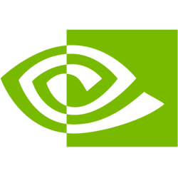

bSmart
别追随声音，追踪判断
知道谁真正值得你关注
排名不是人气榜。每次公开判断都要等待市场结算，再根据表现、样本与时间更新。
 Top 1%
Top 1% Top 4%
Top 4% Top 12%
Top 12%已结算判断不使用未验证观点145
相对市场表现对比标普与行业+18.4%
样本与时效新判断权重更高A
bSmart
两种值得打开的变化
共识告诉你多数，阿尔法告诉你谁先看到
聪明共识SMART CONSENSUS

4 位头部账户围绕 NVDA 的推理开始集中
 多个独立判断 · 一个主题
多个独立判断 · 一个主题聪明阿尔法SMART ALPHA
Top 2% 账户首次提出 MSTR 的新判断
共识形成前的少数高排名来源bSmart
建立你的判断网络
先选标的，再选你愿意追踪的主体
添加持仓或关注
追踪 Smart Account / Money
优势：价值主张最直接，算法只解释到用户能建立信任的程度，第三步直接产出个性化首页。